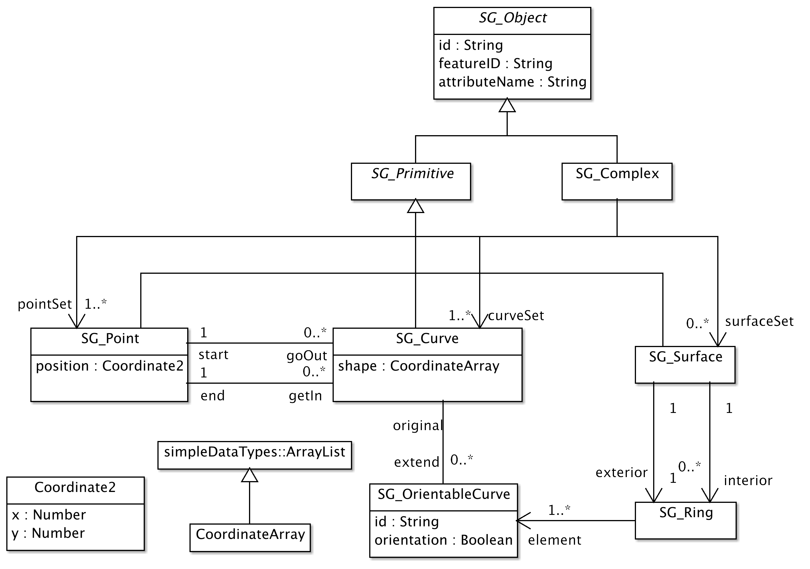
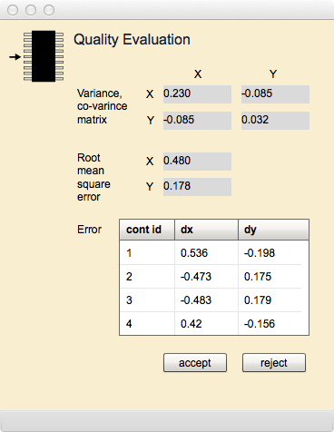
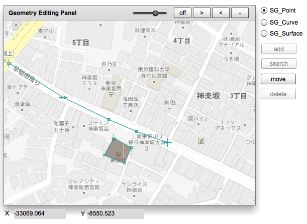

Geometry Editor
幾何編集
このページは，Acquisition Managerとの連携のもとで，地物や関連の形状及び幾何的な関係を示す幾何属性の取得と編集を行うためにあります．ここではまず，幾何属性について解説し，次に，このページの操作手順を説明します．最後に表示欄とボタンそれぞれについて，説明します．
幾何属性
幾何属性は，地物がもつ空間的な性質を記述するためにあります．地球上に存在する地物の多くは，点，線または面で表現することができます．例えば，一本一本の樹木は点で代表させることができるでしょうし，海岸線や行政界は線で代表させることができるでしょう．また，田畑や一定の植生の分布箇所は面で表現できるでしょう．ところで一般に地形には凹凸があります．その凹凸を等高線で表すとすれば，高さと関連づけた線が使われます．また，ランダムに分布する，高さをもつ点群を元にして，内挿法で任意の高さを求めるということもあります．
幾何属性は，地図として地物をグラフィックに表現するために使われますが，空間解析を行うためのデータとしても，使われます．それでは，点，線，そして面はどのように記述するのでしょうか．また，幾何属性は点，線，そして面だけなのでしょうか．これから，幾何属性について，説明します．なお，gittokでは2次元までの幾何属性を扱います．ここでいう2次元とは，平面に投影しても性質が変らない，という意味です．例えば，球面を平面に投影すると，内側と外側があるという性質が無くなってしまいます．つまり，性質を変えないで，球面を平面に投影することはできません．従って，球面は2次元ではないことになります．しかし，茶碗のようなかたちは，伸ばして平面にすることができます．これは2次元です．細かい所を無視すれば，地形も2次元の平面に投影できます．
2次元の平面に投影できる図形は点，線，そして面になります．またそれらの組み合わせにも，2次元のものがあります．もっとも単純な点，線，面のことを単体と呼ぶことがあります．線の場合は交差箇所がないこと，面の場合は，さきほど説明したように，平面に投影できることが条件になります．単体を組み合わせた図形は複体といわれます．道路の中心線のネットワークなどは，複数の交差点と複数の線でできる図形なので，複体です．gittokでは，単体のことを幾何プリミティブ (geometric primitive)，複体のことを幾何複体(geometric complex)と呼んでいます．また，幾何属性は相互に関連性をもちます．このような，幾何属性にスキーマのことをgittokでは空間スキーマと呼んでいます．
空間スキーマ
空間スキーマは，幾何プリミティブと幾何複体からなりますが，それ以外に，プリミティブや複体を成り立たせるために必要なプリミティブなどを含みます．実際にgittokが使用している空間スキーマのなかで，基本となる構造を以下に示します．

図1.gittok の空間幾何スキーマ
幾何プリミティブ (SG_Primitive)
SG_Primitiveは，幾何プリミティブのルートクラスであり，幾何プリミティブが共通にもつ属性を保持しています．
属性
id: 別のプリミティブと区別するためのidです．インスタンスが発生するためびに，自動的に割り振られます．
featureID: 幾何属性は，地物インスタンスのIDをもちます．これによって，Geometry Editorで選択した幾何属性を含む地物を，Acquisition Manager上で見ることができるようになります．ただし，幾何属性と地物が1対1対応の関係になりますので，一つの幾何プリミティブが複数の地物インスタンスの属性になるということは不可能になります．
点 (SG_Point)
SG_Pointは，その位置を属性とする．最も単純な幾何プリミティブで，SG_Primitiveの属性を継承します．
属性
position: これは，点の位置を示します．位置のデータ型は座標型 (Coordinate Type)です．
関連
goOut: 点は，樹木の属性になるときなどは，孤立した存在（孤立点）になりますが，線の端点になる場合もあります．例えば，十字路では4本の線が一つの点を端点とします．端点から線をみると，出てゆく線と，入ってくる線に分類できます．端点が線の始点になる場合は，点から見れば線は，出てゆく線です．このような線の役割はgoOutになります．一つの点から，複数の線が出てゆく可能性があります．
getIn: 点は，樹木の属性になるときなどは，孤立した存在（孤立点）になりますが，線の端点になる場合もあります．例えば，十字路では4本の線が一つの点を端点とします．端点から線をみると，出てゆく線と，入ってくる線に分類できます．端点が線の終点になる場合は，点から見れば線は，入ってくる線です．このような線の役割はgetInになります．複数の線が，一つの点に入る可能性があります．
曲線 (SG_Curve)
SG_Curveは，点から出て，点に入る座標列です．曲線というと，滑らかなカーブを思い浮かべると思いますが，gittokでは現在のところ，折れ線しか扱いません．ただし，将来，改良される可能性もあるので，カーブとしています．SG_Primitiveの属性を継承します．曲線は，自分自身でループを作って交差してはいけないとされています．交差する場合は，交差点で別々に分けます．
属性
segment: 曲線を構成する，一つ以上の座標でできる座標列です．ただし，始点と終点は含みません．始点と終点の間を直線で結ぶ場合は，この属性に座標は入りません．
関連
start: 始点を示します．
end: 終点を示します．
extend: この曲線を元に作られる，有向曲線への関連です．曲線はもともと，始点から終点への向きをもちます．しかし，後で説明するように，曲面の境界になるときは，逆向きであったほうが良い場合があります．そこで，向きを属性としてもつ，曲線を使うと便利なときがあります．有向曲線は向きと，もとになる曲線への関連で定義されます．
曲面 (SG_Surface)
曲面は，線を境界とし、その内側，として定義される，閉じた面です．この面は，2次元なので，平面に投影できなければいけません．曲面というと，東京ドームの屋根のように，湾曲した面を思い浮かべますが，gittokでは当面，境界線もその内側も平面上にあるということにしています．SG_Primitiveの属性を継承しますが，固有の属性はありません．
関連
exterior: 2次元の曲面には境界があります．これは外側の境界です．境界は閉じた曲線，つまり輪になりますが，多くの場合，輪は，複数の有向曲線の列で表現されます．
interor: これは内側の境界です．湖に島があるような時，また，家の内側にパティオのような庭がある時など，内側の境界が必要になります．内側の境界は，複数になる場合があります．ただし，現在gittokでは内側境界を扱うことができません，近い将来，できるようにします．
有向曲線 (SG_OrientableCurve)
これは，曲面の境界になる，向きをもつカーブです．曲面の内側を左に見る方向が正，右に見る方向のときは，負になります．
属性
orientation: 正の場合はtrue，負の場合はfalseになります．
関連
original: この有向曲線のもとになる曲線への関連です．
輪 (SG_Ring)
曲面の境界は輪になります．しかし，輪は複数の有向曲線の列で定義されます．輪はgittokでは左回り（反時計回り）になるように作りますので，左側に面の内側を見る方向で進む有向曲線の向きはプラス，右に見るときはマイナスになります．そのような向きをもつ曲線のあつまりが輪です．
属性
element: 一つ以上の有向曲線の列です．
2次元座標 (Coordinate2)
座標とは，座標系で定義される複数の座標軸に沿って測られる，原点からの距離（成分といいます）の組です．gittokでは2次元までの空間を扱うので，座標の成分は２つあります．それでは，座標系とは何でしょうか．座標系とは，座標を与えるための基準で，次元の数だけの座標軸の定義からなります．ところで，ここでいっている次元は，幾何属性の次元とは異なり，座標成分の数のことを指します．このような次元は幾何次元といいます．一方幾何属性の次元は，位相次元といいます．位相とは，弾性的に変形しても変らない性質のことです．
私たちがよく使う座標に，平面直角座標があります．平面上の任意の位置を原点とし，互いに直交する座標軸をもうけ，同じ単位で測った，原点からの距離の組（xとy）で座標を表現するものです．地理情報技術では，これ以外に緯度経度があります．地球の形を回転楕円体で近似し，その重心を原点にとって，赤道からの角度で緯度，本初子午線から東向きに測った角度を経度とするものです．赤道と本初子午線が座標軸になり，その交点が原点になります．その位置は，アフリカの西側の海上にあります．
属性
x: x軸上の原点からの長さ．軸の定義は別に行う．
y: y軸上の原点からの長さ．軸の定義は別に行う．
dimenshion: 次元の数．この場合は常に２である．
座標列 (CoordinateArray)
座標列は一つ以上の座標の配列です．gittokでは，ArrayListという型を継承して表現しています．ArrayListは可変長の配列なので，任意の数の座標を入れることができます．
幾何編集
Geometry Editorは，幾何データの取得と編集を行うためにある．Acquisition Managerで生成される地物インスタンスと関連づけることによって幾何データは，インスタンスの空間属性になります．ここでは，幾何データの取得及び編集のための手順を解説します．
ベースマップ，デフォルト記号，コントロールポイントの指定
gittokでは，幾何データは，地図から取得します．その地図はベースマップと呼び，平面直角座標系，またはUTM座標系（これらを平面座標と呼びます）に従うものとしています．平面直角座標系は，局所的に地球表面を平面と見なす座標系です．日本の平面直角座標系の場合，国内に１９箇所の座標原点を設け，東西方向の距離の１万分の１までの誤差を認める投影法を採用しています．UTM座標系の場合は，世界を東西方向で60のゾーンに分け，1万分の4までの誤差を認めるものです．平面座標系の詳細については，別に用意している資料を参照して下さい．
さて，これから準備の手順を説明します．
1. Acquisition manager で幾何属性を選択すると，Geometry Editorが開きますが，この時点ではベースマップなど，幾何データを取得するための条件が整っていないので，warningが表示されます．これに対しては，OKボタンを押します．
2. preparation タブが選択されていることを確認し，幾何データを取得するために，ベースマップを呼び出します．ベースマップには，画面座標から，地上の平面座標への変換を可能にするために，図の四隅のそばに，あらかじめ，ID番号を付けた4点のコントロールポイントの位置を記入しておきます．
3. 図上に計測した図形を表示するために点，線，面の表示用記号を定義したファイルを呼び出します．ここではこれをデフォルト記号辞書と呼びます．
4. コントロールポイントの地上座標（平面座標）を記録するファイル（コントロールポイントファイル）を呼び出します．
これで準備は終わりです．
図2. 準備が終了したGeometry Edirorの画面
ベースマップの標定
標定とはこの場合，図面座標から地上の平面座標への変換パラメータと，変換の正確さをしめす分散・共分散行列を求めることを指します．gittokではそのためにアフィン変換（一次変換）を使いますので，３箇所以上の，図面座標とそれに対応する平面座標の対が必要になります．ベースマップの図郭に座標が示されている場合は，図上で平面座標を求めることができます．また，インターネットの地図サービスや座標変換サービスを使うこともできます．
あらかじめベースマップには，平面座標が分かっている3箇所以上の位置（できるだけ図上に均等に配置する）にマークを付け，そばにid番号を記入しておきます．これをスキャンニングして画像ファイルとし，適当なフォルダーに置いておきます．
標定のためには，ベースマップ上の基準点（コントロールポイント）の地上平面座標を記録したテキストファイルが必要になります．このファイルには，例えば以下に示すXML形式の文書が入っています．
<IdentifiedCoordinateArray element="1,-32852.246,-8748.471,2,-32852.055,-8188.527,3,-33237.924,-8737.200,4,-33241.755,-8269.957" dimension="2"/>
ここで，IdentifiedCoordinateArrayというタグは，id付きの座標の列という意味です．element という属性を見ると（id，x座標，y座標）の列になっていることがわかります．このタグには座標の次元が2次元であることを示すために，dimenshionという属性も必要です．ちなみに，平面地上座標系のx座標は縦座標，y座標は横座標です．
以上の前提のもとで，標定の手順を説明します．
1. まず，Orientationタブを選択します．
2. Control Point ID欄に，これから指定するコントロールポイントのidを入力します．
3. Geometry Editing Panelの右上にある，4つのボタンを使って，指定するIDをもつコントロールポイントに位置を表示させます．4つのボタンは，以下の能力をもちます．
off: このボタンを押すと，ボタンの表示がonになり，画面のスクロールが可能になります．onの間は，すくルールはできますが，位置の指定はできません．
>: このボタンを押すと表示縮尺が小さくなります．
<: このボタンを押すと，表示縮尺が大きくなります．
- : このボタンを押すと，表示される画面縮尺が，初期化されます．
スライダー: ベースマップの透明度を調整することができます．ベースマップの表示を目立たせないようにするときに，使用します．
4. スクロールボタンがoffになっていることを確認して，コントロールポイントの位置にカーソルを合わせ，ポインティングデバイスのボタンを押します．すると，点のデフォルト記号が表示されます．もしその位置が気に入らない場合は，何度でもやり直しができます．
5. スクロールボタンをonにして，2.に戻ります．コントロールポイントの数だけこの操作を繰り返します．
6. get parametersボタンを押します．すると以下に示すQuality evaluation ページに，標定の正確度を示す分散共分散行列，x，yの標準偏差, それぞれの基準点における誤差が表示されます．これを見て，充分な正確度で変換パラメータが求められていると判断する場合は，accept，そうでない場合はrejectボタンを押します．acceptを選択すると、get pamameters ボタンの表示が oriented になって，使用不能になります．rejectを選択した場合，標定作業を最初から繰り返すことができます．

図3. 標定の正確度を評価するためのページ
7. get parameters ボタンの右に show ボタンがありますが，これを押すと，標定の結果を，再度見ることができます．
幾何データの取得
幾何データの取得は，Geometry Editing panelを使って行います．以下に，取得と編集の手順を示します．
1. まず，取得する幾何データの種類を，パネルの右側にあるラジオボタンで選択します．
2. 次にadd ボタンを押します．すると，選択した型の幾何データを取得することができるようになります．ただし，線を取得する場合は，線の端点がすでに存在しなければいけません．また，面を取得する場合は，境界になる線が既に存在しなければいけません．ですから一般的には，点，線，面の順番で幾何データを取得することになります．
3. 点の取得の場合，点を取得する位置にカーソルを合わせ，ポインティングデバイスのボタンを押します．すると，その位置に点の記号が表示されます．
4. 線の取得の場合，まず始点にカーソルを合わせてボタンを押します．次に，線をたどって，中間点の位置にカーソルを合わせて，ボタンをおします．最後に終点に来たら，Macの場合は commandキーを押しながら (Windowsの場合はaltキー），ボタンを押します．それで，曲線が終点につながります．中間点はなくてもかまいません．
5. 面の取得の場合，面取得を行う前に，境界線の取得が完全にできていなければいけません．それができていれば，操作は単純です．つまり，面の内側にカーソルをもっていき，ボタンを押すだけです．すると，面が塗りつぶされます．もし，境界線が閉じていないときは，could not find surfaceというメッセージが画面にでます．そのときは，境界線を完全にして，再度，面の取得を行うことになります．
幾何データの検索
一度取得した幾何データの検索は，以下の手順で行います．
1. 幾何データの型をラジオボタンで指定し，search ボタンを押す．
2. 該当する幾何データのそばで，クリックする．
3. 検索できた幾何データには，赤い丸の印が付く．対象が曲線の場合は，中間点があれば，最も近くの中間点，なければ，最も近い線の上に赤い丸が表示される．
幾何データの移動
一度取得した幾何データの移動は以下の手順で行います．ただし，曲面の移動は，点の移動と曲線の移動を使って行って下さい．
点の場合：
1. 点の位置を検索する．すると，該当する点に赤い丸が表示される．
2. move ボタンを押して，移動する位置をクリックする．
曲線の場合：
1. 曲線上で，動かしたい中間点の位置周辺にカーソルを合わせて，曲線を検索する．ただし，その位置は，始点又は終点であってはいけない．これらの点は中間点ではないので「点の場合」で移動する．中間点がある場合は，その位置が検索されると，赤い丸が表示される．
2. move ボタンを押して，移動先をクリックする．
幾何データの削除
一度取得した幾何データは，それが，より次元の高い幾何データの境界ではないこと，そして，地物インスタンスの属性になっていないこと，という条件が満たされれば，削除することができます．その手順は以下の通りです．
1. 該当する幾何データの検索
2. delete ボタンを押す．
地物インスタンスと幾何属性の関連付け
点，曲線及び曲面は，地物インスタンスの幾何属性になる可能性があります．地物はストックされている幾何データの参照用idをもつことによって，属性をもったことになります．例えば，建物の形状を曲面で表現するとき，応用スキーマの中で定義付けておけば，そのidをもつことによって，地物インスタンスは幾何属性をもったことになります．しかし，その境界や，境界線の端点は地物の属性と考える必要はない，とすればこれらは，幾何データとしては，曲面を構成する上で必要ですが，それ自体が属性になることはなく，地物インスタンスと関連することはありません．
幾何データはより低次元の幾何データを境界にします．逆にいえば，より低次元の幾何データがなければ高次元の幾何データはできません．ですから，高次元の幾何データを属性にするときは，より低次元のデータが背景にあるということを覚えておきましょう．さらに，上で示した空間スキーマの中には，幾何属性になり得ないプリミティブの定義も含まれています．ringとorientable curveは，曲面の部品として作成されるものですが，幾何属性にはなりません．gittokでは，直接地物の属性にならなくても，必要な幾何データは，Kit に保存されます．
さて，点，曲線または曲面を地物インスタンスの属性にするには，以下の手順で行います．
1. Acquisition Managerのページ上で，該当する地物のインスタンスが生成され，呼び出されていること，そして，該当する幾何属性がAttribute Grd欄で指定されていることを確認する．
2. Geometry Editorのページ上で，該当する幾何データを検索する．
3. Acquisition ManagerのValue Gridの下にあるadd ボタンを押す．すると，Value Gridのid欄に，新たなidが表示される．これで，幾何属性が，地物インスタンスに関連したことになる．
4. 確認するためには，このidが表示されている行をクリックすると，Geometry Editorの幾何データの中央に，赤い丸が表示される．
幾何属性の削除
一度取得した幾何属性を地物インスタンスから削除する場合は，以下の手順で行います．
1. Value Gridの，該当する属性の行を選択し，delete ボタンを押す．すると，その行が削除される．さらに，幾何データも削除する場合は，幾何データの削除を参照すること．
Geometry Editor の操作画面
Geometry Editor の操作画面は，大きく，タブボックスと，Geometry Editing Panel に分けられる．タブボックスは画面座標と平面座標の標定を行うためにあり，パネルは幾何データの取得と編集を行うためにある．
タブボックス
Preparation

図4. 幾何データ取得の準備を行うタブボックス
このタブボックスは，Geometry Editorの上部にあり，ベースマップの指定，デフォルト記号辞書の指定及び標定用の基準点ファイルの指定を行うためにあります．
表示欄
Base Map
ベースマップの指定を行うと，この欄にファイル名が表示されます．
Default Symbol
デフォルトの記号辞書の指定を行うと，この欄にファイル名が表示されます．
Control Points
基準点の平面地上座標ファイルの指定を行うと，この欄にファイル名が表示されます．
ボタン
open (Base Map)
ベースマップを指定することができます．
open (Default Symbol)
デフォルトの記号辞書を指定することができます．
open (Control Points)
基準点の平面座標（地上）ファイルを指定することができます．
Orientation

図5. 座標の標定を行うためのタブボックス
このタグボックスは，ベースマップの画面座標を平面地上座標に変換する標定を行うためにあります．
表示欄
Control Point ID
ベースマップ上の基準点位置のそばに記入されている基準点IDをここに入力します．
ボタン
get parameters
このボタンを押すと，標定のためのパラメータと，正確度評価のための分散・共分散行列を求める操作が起動し，正確度を示すページが表示されます．
show quality
再度正確度の値が見たいときは，このボタンを押します．
Geometry Editing Panel

図6. 幾何データを取得し，編集するためのパネル
このパネルは，幾何データの取得と編集を行うためにあります．
表示欄
X
標定が行われると，クリックしたカーソルの平面地上座標のX座標がここに表示される．
Y
標定が行われると，クリックしたカーソルの平面地上座標のY座標がここに表示される．
ボタン
SG_Point, SG_Curve, SG_Surface
取得，編集する幾何データの型を指定する．
add
このボタンをクリックしてから，幾何データの追加を行う．
search
このボタンをクリックしてから，幾何データを検索する．
move
このボタンを押すと，あらかじめ指定した位置に，点又は曲線の中間点が移動する．
delete
このボタンを押すと，検索された幾何データが削除される．ただし，幾何データは地物の属性になっていてはいけない．また，より高次元の幾何データの境界になっていてはいけない．
off/on
ベースマップの移動を可能にするときはon，そうでないときはoffにする．
>
このボタンを押すと表示縮尺が小さくなる．
<
このボタンを押すと，表示縮尺が大きくなる．
-
このボタンを押すと，表示される画面縮尺が，初期化される．
スライダー
ベースアップの透明度を調節する．幾何データを見たいときは，透明度を上げると，見やすくなる．
日本語
今あなたが読んでいるドキュメントが表示されます．
English
You can read the tutorial written in English.